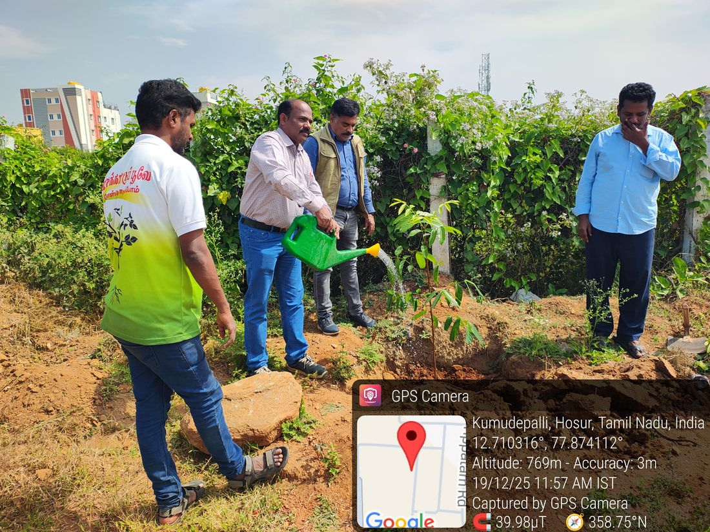
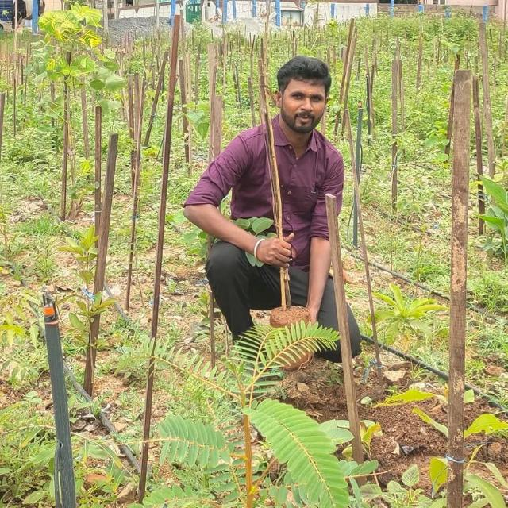
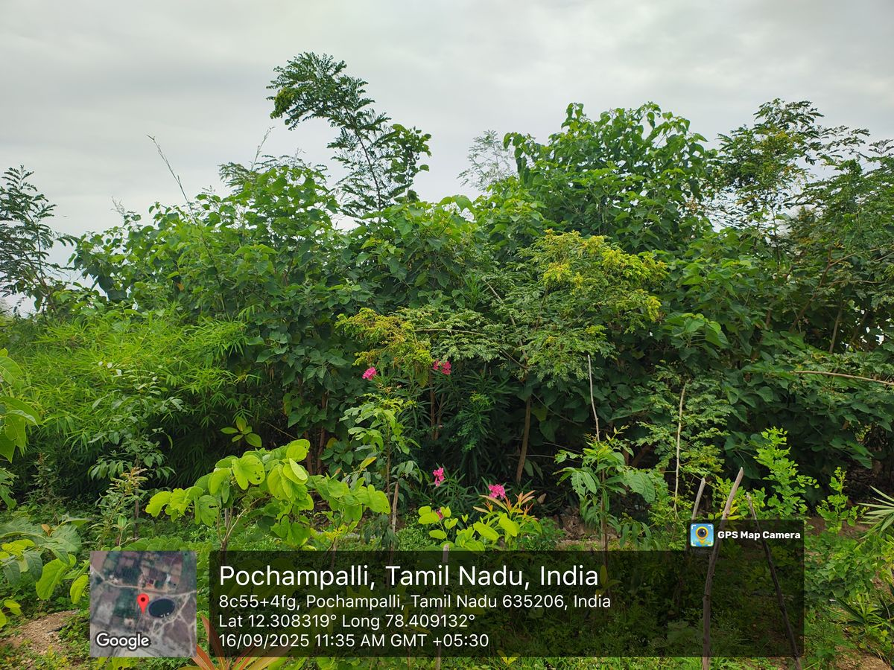

Growing nature, nurturing people
A grassroots environmental and social movement born in the heart of Tamil Nadu.
From barren land to living forests
The name Karisakattu Poove — "the flower of the black, arid soil" — captures our belief that even the harshest land can bloom again.
What started in 2019 with our first 1,000-sapling Miyawaki forest at Chennathur, Hosur has grown into a movement of thousands. We saw farmers losing soil, villages losing water, and children losing green spaces — and decided to act, tree by tree.
Today, Karisakattu Poove Trust works hand-in-hand with local communities, schools, government bodies and companies to restore ecosystems and rebuild lives. Every project is rooted in one principle: nature and people must grow together.
Join Our MissionOur Mission
To restore degraded land into thriving green ecosystems and empower rural families through education, water security and sustainable livelihoods.
Our Vision
A Tamil Nadu where every village is surrounded by forests, every child learns under green canopies, and no family is left behind.
Our Values
Transparency, community ownership, sustainability and compassion guide every decision we make and every rupee we spend.

Senthil
A son of the soil with a simple dream — to see his dry homeland turn green again.
Senthil founded Karisakattu Poove Trust with his own hands in the fields around Hosur, planting the very first saplings himself. What began as one man's mission has grown into a movement of thousands of volunteers, schools and partners.
His belief is unwavering: when we heal the land, we heal the community. Every forest grown and every family supported is a step toward that vision.
Get in TouchOur team & volunteers
Farmers, students, professionals and families — the hands and hearts behind every forest we grow.
Milestones that grew us
Our First Miyawaki Forest
1,000 saplings planted at Chennathur Panchayat, Hosur — the trust is born.
A Forest in Memory
800-sapling forest at Bedrapalli Lake in memory of those lost to COVID-19.
Government & CSR Join In
TN Govt Mamaku scheme (5,000 saplings) and CSR partners SSF Plastic, Global Calcium, CREDAI.
Green Champion Award
Honoured by the Government of Tamil Nadu for our environmental work.
Industrial-Scale Forests
OLA, GAIL India and SSF Plastic back large Miyawaki forests across SIPCOT and Hosur.
25,000 in a Single Forest
Our largest Miyawaki forest yet — 25,000 saplings at Chennapalli with SSF Plastic.
Our impact so far
Watch our journey
See our plantation drives, Miyawaki forests and volunteer stories.

Be part of our story
Your hands, your voice or your support can help the next barren acre bloom.